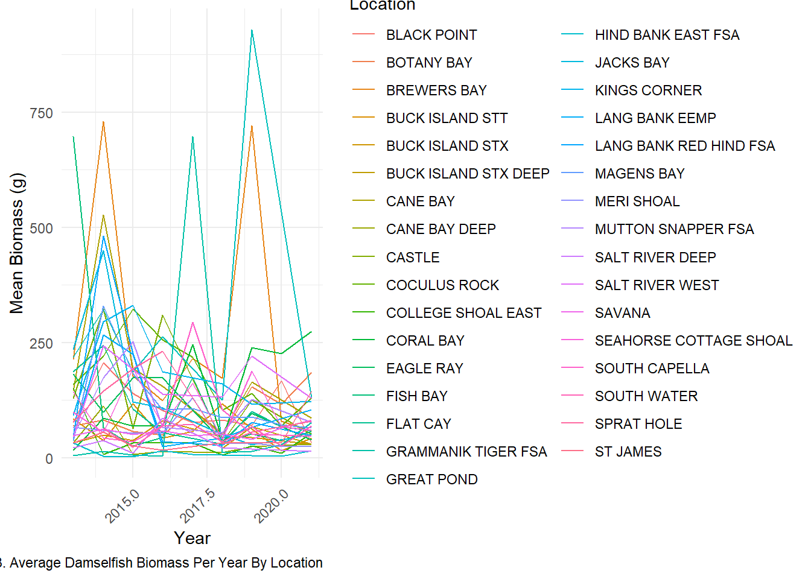
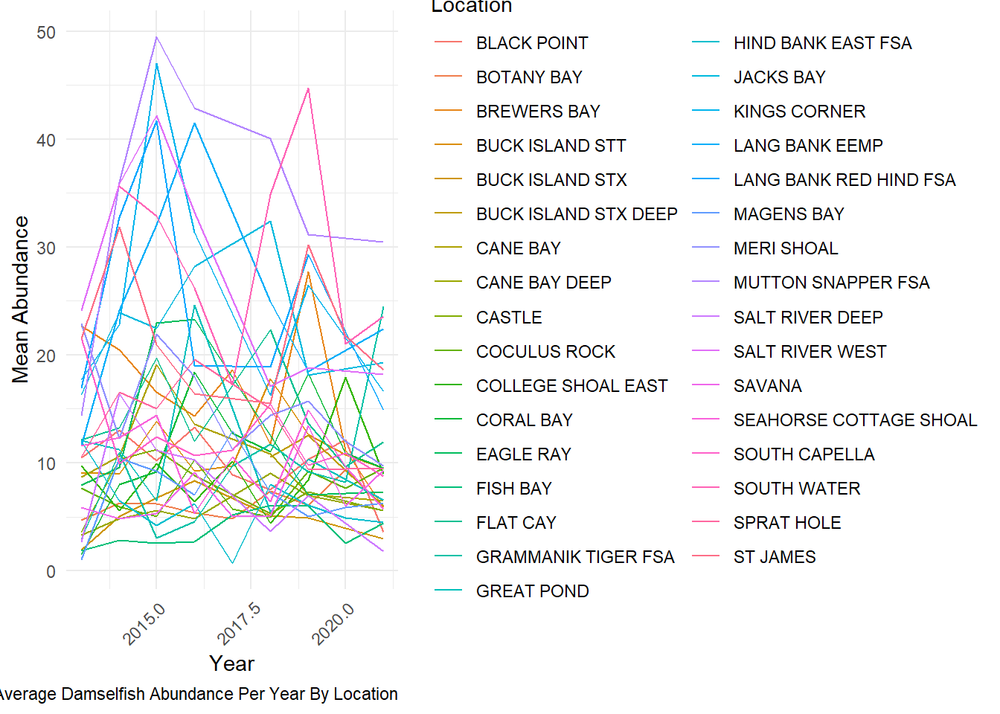
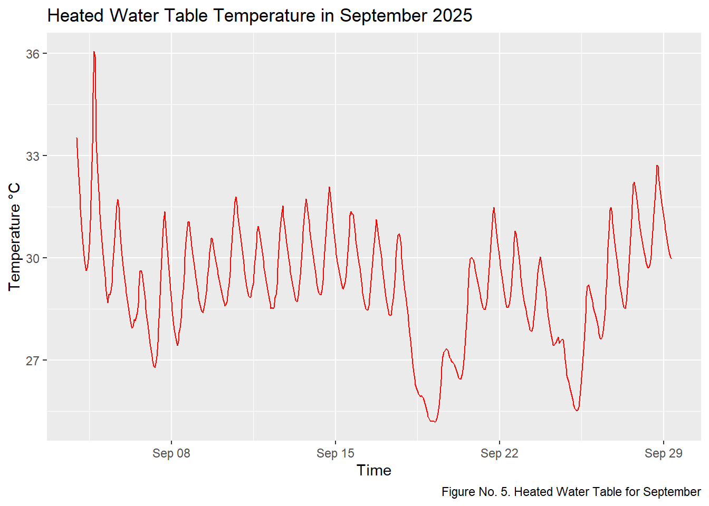
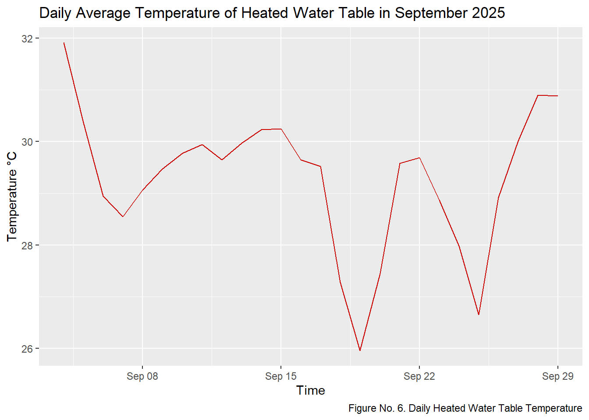

The Territorial Coral Reef Monitoring Program (TCRMP) has fish abundance and biomass data from 2002; however, records of damselfish-coral interactions do not consistently begin until 2013 which is why I am looking at trends from 2013-2021.
All damselfish species found in the USVI were accounted for measuring the biomass and abundance at each TCRMP site. Two maps were created to look at the mean damselfish biomass/ abundance rom 2013 to 2021 (Figure No.1 and No.2). From the maps, it looks like St. Croix has a higher abundance of damselfish species throughout the years, but have medium biomass.
Figure No. 1. The Average Damselfish Biomass from 2013-2021
Figure No. 2. The Average Damselfish Abundance from 2013-2021
Figure No. 3 demostrates damselfish biomass trends along different sites from 2013 to 2021.
Reveal the code
####Libraries########library(tidyverse)library(readxl)library(ggplot2)#GOAL: avg biomass every site for the last 10 years (for this map for class)TCRMP_FISH_METADATA <-read.csv("TCRMP_datasets/TCRMP_Master_Fish_Census_Aug2022.xlsx - MetaData.csv")TCRMP_FISH_RAW <-read.csv("TCRMP_datasets/TCRMP_Master_Fish_Census_Aug2022.xlsx - FishData.csv")CLEAN_TCRMP_FISH <-subset(TCRMP_FISH_RAW, select =-c(Month, SampleYear , Period, CommonName, X0.5, X6.10, X11.20, X21.30, X31.40, X41.50, X51.60, X61.70, X71.80, X81.90, X91.100)) %>%# removing excess columns mutate(Location =toupper(Location)) %>%#making all site names the same dplyr::filter(!dplyr::between(as.numeric (Year), 2003, 2012)) #filter data to 2013-2021BIOMASS_DAMSEL <- dplyr::filter(CLEAN_TCRMP_FISH, Metric!="Abundance", #removing rows (abundance) ScientificName %in%c("Microspathodon chrysurus", #Yellowtail damselfish"Stegastes partitus", #Bicolor damselfish"Stegastes variabilis", #Cocoa damselfish"Stegastes diencaeus" , #Longfin damselfish"Stegastes adustus", #Dusky damselfish"Stegastes leucostictus", #Beaugregory damselfish"Stegastes planifrons", #Threespot damselfish"Abudefduf saxatilis"#Sargent major )) # removing all fish species except damselfish species TRANSECT_MEAN_DAMSEL <- BIOMASS_DAMSEL %>%# mean of damselfish biomass along each transect by year and locationgroup_by(Location, Transect, Year) %>%summarise(Sum_Biomass=sum(Total),Mean_Biomass =mean(Total) ,.groups ="drop") %>%unique()DAMSELFISH_BIOMASS <- TRANSECT_MEAN_DAMSEL %>%# Mean of damselfish biomass along each site per year group_by(Location, Year) %>%summarise(Location_Biomass_mean = (sum(Mean_Biomass))/10#10 is the transect per site )MAP_DAMSELFISH_BIOMASS <- DAMSELFISH_BIOMASS %>%# Mean of damselfish biomass along each site group_by(Location) %>%summarise(Location_Biomass_mean = (mean(Location_Biomass_mean)) )print(head(MAP_DAMSELFISH_BIOMASS))
# A tibble: 6 × 2
Location Location_Biomass_mean
<chr> <dbl>
1 BLACK POINT 106.
2 BOTANY BAY 96.0
3 BREWERS BAY 277.
4 BUCK ISLAND STT 64.2
5 BUCK ISLAND STX 45.6
6 BUCK ISLAND STX DEEP 39.2
Reveal the code
BIOMASS_PLOT <-ggplot(DAMSELFISH_BIOMASS, aes(x=Year , y = Location_Biomass_mean, group= Location, color = Location)) +geom_line() +labs(x="Year", y="Mean Biomass (g)") +labs(caption ="Figure No. 3. Average Damselfish Biomass Per Year By Location") +theme_minimal() +theme(legend.position ="right") +theme(axis.text.x =element_text(angle =45, hjust =1)) print(BIOMASS_PLOT)

Reveal the code
## need to mutate to combine site locations to make a map! ###TCRMP_SITE <- read.csv("C:/Users/Owner/OneDrive/Documents/GOODMAN_THESIS/TCRMP_datasets/TCRMP_Site_Metadata.xls - SiteMetadata.csv") %>% #mutate(Location = toupper(Location)) # uppercase site so they match my other dataset#SITE_BIOMASS_DAMSELFISH <- #left_join(DAMSELFISH_BIOMASS, TCRMP_SITE[, c("Location", "Latitude", "Longitude", "Island" )], by = "Location")#SITE_MAP_DAMSELFISH_BIOMASS <- #left_join(MAP_DAMSELFISH_BIOMASS, TCRMP_SITE[, c("Location", "Latitude", "Longitude", "Island" )], by = "Location")#saved desired datasets for ArcGIS#write.csv(SITE_BIOMASS_DAMSELFISH, file.path("C:/Users/Owner/OneDrive/Documents/GOODMAN_THESIS/RCODE/CREATED_DATASETS", "Annual_Damselfish_Biomass.csv"), row.names = FALSE)#write.csv(SITE_MAP_DAMSELFISH_BIOMASS, file.path("C:/Users/Owner/OneDrive/Documents/GOODMAN_THESIS/RCODE/CREATED_DATASETS", "Average_Damselfish_Biomass.csv"), row.names = FALSE)
Reveal the code
###########################################################################doing everything but with abundance ###################################################################################ABUND_DAMSEL <- dplyr::filter(CLEAN_TCRMP_FISH, Metric!="Biomass" , # removing rows (biomass) ScientificName %in%c("Microspathodon chrysurus","Stegastes partitus","Stegastes variabilis","Stegastes adustus","Stegastes leucostictus","Stegastes planifrons" ))TRANSECT_ABUND_MEAN_DAMSEL <- ABUND_DAMSEL %>%# mean of damselfish abundance along each transect by year and locationgroup_by(Location, Transect, Year) %>%summarise(Sum_Abundance=sum(Total),Mean_Abundance =mean(Total) ,.groups ="drop") %>%unique()ABUNDANCE_DAMSELFISH <- TRANSECT_ABUND_MEAN_DAMSEL %>%# Mean of damselfish biomass along each site per year and locationgroup_by(Location, Year) %>%summarise(Location_Abundance_mean = (sum(Mean_Abundance))/10#10 is the transect per site )MAP_ABUND_DAMSELFISH <- ABUNDANCE_DAMSELFISH %>%# Mean of damselfish biomass along each site group_by(Location) %>%summarise(Location_Abundance_mean = (mean(Location_Abundance_mean)) )print(head(MAP_ABUND_DAMSELFISH))
# A tibble: 6 × 2
Location Location_Abundance_mean
<chr> <dbl>
1 BLACK POINT 9.96
2 BOTANY BAY 6.24
3 BREWERS BAY 16.6
4 BUCK ISLAND STT 11.3
5 BUCK ISLAND STX 5.02
6 BUCK ISLAND STX DEEP 9.71
Reveal the code
ABUNDANCE_PLOT <-ggplot(ABUNDANCE_DAMSELFISH, aes(x=Year , y = Location_Abundance_mean, group= Location, color = Location)) +geom_line() +labs(x="Year", y="Mean Abundance") +labs(caption ="Figure No. 4. Average Damselfish Abundance Per Year By Location") +theme_minimal() +theme(legend.position ="right") +theme(axis.text.x =element_text(angle =45, hjust =1)) print(ABUNDANCE_PLOT)

Reveal the code
## need to mutate to combine site locations to make a map! ###SITE_ABUND_DAMSELFISH <- # left_join(ABUNDANCE_DAMSELFISH, TCRMP_SITE[, c("Location", "Latitude", "Longitude", "Island" )], by = "Location")#SITE_MAP_ABUND_DAMSELFISH <- # left_join(MAP_ABUND_DAMSELFISH, TCRMP_SITE[, c("Location", "Latitude", "Longitude", "Island" )], by = "Location")#saved desired datasets for ArcGIS#write.csv(SITE_ABUND_DAMSELFISH, file.path("C:/Users/Owner/OneDrive/Documents/GOODMAN_THESIS/RCODE/CREATED_DATASETS", "Annual_Damselfish_Abundance.csv"), row.names = FALSE)#write.csv(SITE_MAP_ABUND_DAMSELFISH, file.path("C:/Users/Owner/OneDrive/Documents/GOODMAN_THESIS/RCODE/CREATED_DATASETS", "Average_Damselfish_Abundance.csv"), row.names = FALSE)
Water Table Failed Experiment Data
Both water tables were set up at the same time; however, the ambient water table experienced a lot of leaking. Water changed became infrequent after September 9th - 31st. There was also two storms that occurred around September 19th and 25th.
Overall, both water tables experienced very high temperatures and could not be used for my coral experiment.
Reveal the code
library(tidyverse)HEAT_clean <-read_csv("HOBO_LOGGER/Goodman_WT_Heat_20250903_21445092.csv")%>%select(-`Coupler Detached`, -`Coupler Attached`, -`Host Connected`, - Stopped, -`End Of File`, -`#`) %>%filter(!is.na(`Date Time, GMT-04:00`) &!is.na(`Temp, °C`))HEAT_clean$`Date Time, GMT-04:00`<-as.POSIXct(HEAT_clean$`Date Time, GMT-04:00`, format ="%m/%d/%Y %H:%M")HEAT_PLOT <-ggplot(data = HEAT_clean, aes(x=`Date Time, GMT-04:00` , y=`Temp, °C`)) +geom_line(color ="red") +labs(title ="Heated Water Table Temperature in September 2025" , caption ="Figure No. 5. Heated Water Table for September" ,x ="Time" ,y ="Temperature °C")print(HEAT_PLOT)

Reveal the code
HEAT_MEAN <- HEAT_clean %>%mutate( `Date`=as.Date(`Date Time, GMT-04:00`)) %>%group_by(`Date`) %>%summarise( Mean_H_temp =mean(`Temp, °C`),Date = Date)## Great! I was able to see the Means of daily temperature, Time to plot!DAILY_HP <-ggplot(data = HEAT_MEAN, aes(x=Date , y = Mean_H_temp)) +geom_line(color ="red3") +labs(title ="Daily Average Temperature of Heated Water Table in September 2025" ,caption ="Figure No. 6. Daily Heated Water Table Temperature",x ="Time" ,y ="Temperature °C")print(DAILY_HP)

Reveal the code
AMBIENT_clean <-read_csv("HOBO_LOGGER/Goodman_WT_Regular_20250903_214451061.csv") %>%select(-`Coupler Detached`, -`Coupler Attached`, -`Host Connected`, - Stopped, -`End Of File`, -`#`) %>%filter(!is.na(`Date Time, GMT-04:00`) &!is.na(`Temp, °C`))## fix date as an numeric AMBIENT_clean$`Date Time, GMT-04:00`<-as.POSIXct(AMBIENT_clean$`Date Time, GMT-04:00`, format ="%m/%d/%Y %H:%M")AMBIENT_PLOT <-ggplot( data = AMBIENT_clean , aes(x =`Date Time, GMT-04:00`, y =`Temp, °C`)) +geom_line( color ="blue") +labs(title ="Ambient Water Table Temperatures in September 2025" ,caption ="Figure No. 7. Ambient Water Table For September" ,x ="Time",y ="Temperature °C")print(AMBIENT_PLOT)
Reveal the code
AMBIENT_MEAN <- AMBIENT_clean %>%mutate(Date =as.Date(`Date Time, GMT-04:00`)) %>%group_by(Date) %>%summarise( mean_A_temp =mean(`Temp, °C`), Date = Date)##YES NOW PLOT!AMB_MEAN_PLOT <-ggplot(data=AMBIENT_MEAN , aes(x=Date , y = mean_A_temp)) +geom_line(color ="blue3") +labs(title ="Daily Average Temperature of Ambient Water Table in September 2025" , caption ="Figure No.8. Ambient Water Table For September" ,x ="Time" ,y ="Temperature °C")print(AMB_MEAN_PLOT)